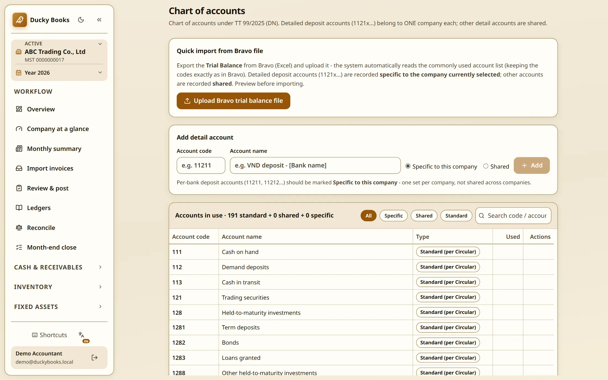
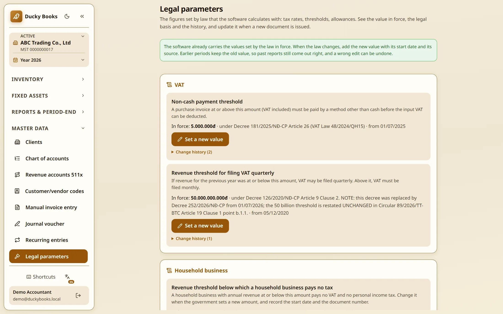
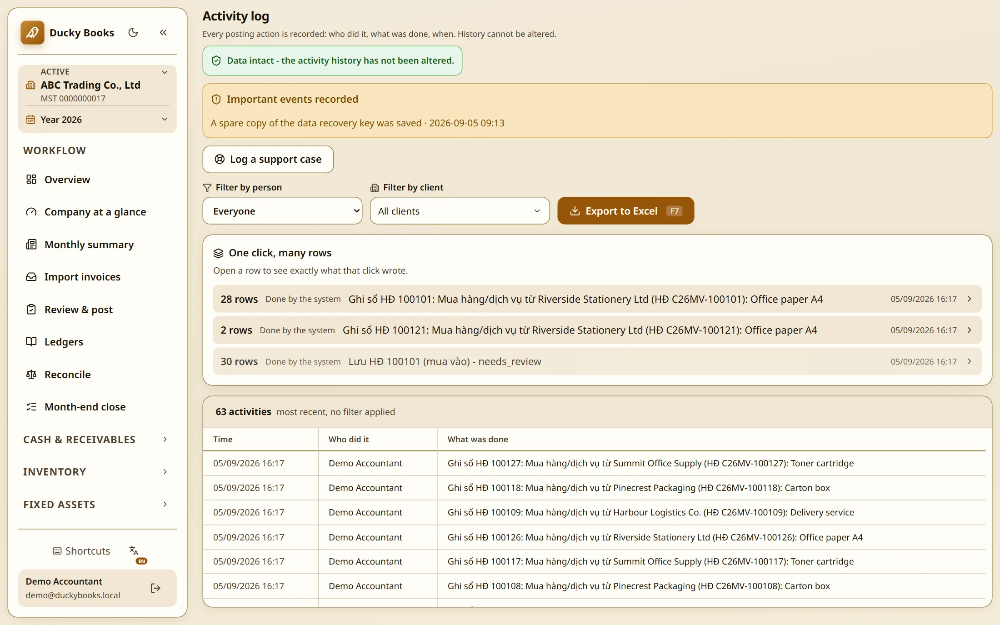
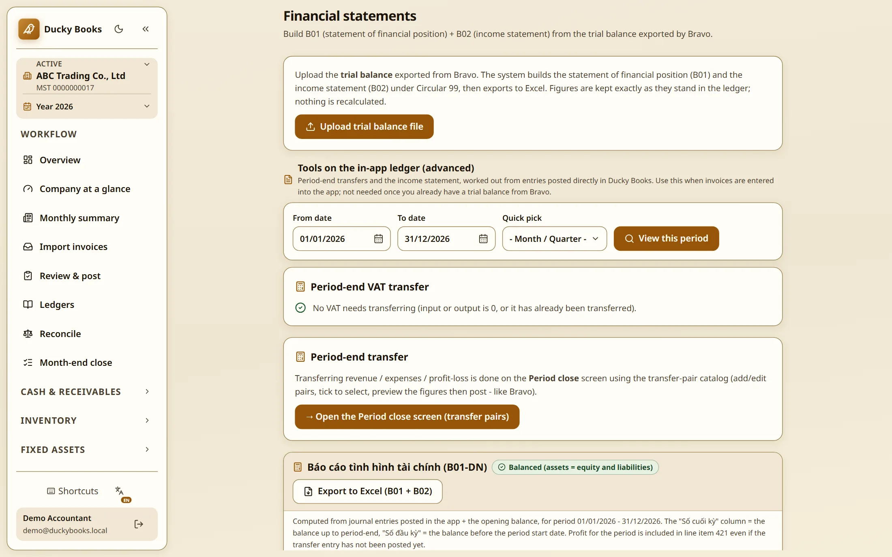

Why this was not simple
You choose your own accounts. The reporting standard sets the minimum lines, then says it "does not prescribe the order or format". Smaller companies have no set list.
An invoice is between you and your customer. Since April 2023 Inland Revenue no longer requires a document called a tax invoice. Keep records; hand them to a GST registered buyer who asks.
eInvoicing is a preference. Large government agencies must be able to receive them, and from 2027 will require their biggest suppliers to send them.
GST is 15%. Register at $60,000 turnover. Returns due the 28th of the following month, except March (7 May) and November (15 January).
The government writes the list of accounts. Cash on hand 111, revenue 511, cost of goods sold 632. The Ministry of Finance issues it; almost every company uses it unchanged. Since January 2026 a company may adjust it, only under written internal rules.
The tax office sees the invoice first. Since July 2022 almost every business must issue electronic invoices: XML files, signed digitally. In many cases the tax office adds a code; only then is the invoice valid.
A named person carries the risk. Most companies must appoint a chief accountant, qualifications set by law, not the employer. Criminal charges normally start at tax evasion of 100 million dong, roughly NZ$6,500, lower for someone already fined for the same thing.
The rules move mid year. In 2025 and 2026 Vietnam replaced five things at once: company and personal income tax law, tax administration law, company accounting rules, the whole invoice framework.

If you work in New Zealand, none of this will sound hard. Xero and MYOB have read bank feeds and supplier invoices for years. The typing was never the hard part; the hard part is where the reading lands. Put a reading in the wrong account and the books still balance. They are just wrong, and someone signs them anyway.
Neither way is better. Accounting research splits countries by who funds companies: where investors do, the rules answer to investors; where the state and the banks do, to the state. First group: New Zealand, Australia, the United Kingdom, the United States. Second: France, Germany, China, Vietnam. It varies: France and Vietnam set a national list of accounts, Germany does not.
One 2026 tracker counts 52 countries requiring business to business e-invoicing; the European Union from July 2030 between member countries, domestic systems by 2035.
New Zealand has set no date; between businesses it stays voluntary, required only when selling to government. I am not saying New Zealand is heading that way, only that I have worked where the tax office sees every invoice before it counts.
The hard part
Why a decree, not the Act. The law sets the principle, the decree sets the number, and the number moves more often.
One place I have not finished checking. A separate rule, for purchases with no invoice, adds up one day of buying from one supplier; this rule checks each invoice alone. Whether the law intends the same day rule here I have not settled, so I claim nothing.

New Zealand tax thresholds changed on 31 July 2024, part way through a tax year, so the whole year ran on what Inland Revenue calls composite tax rates; the date was pushed back a month for payroll providers. Minimum wage changes every 1 April; ACC levies move on their own cycle.
Tax, insurance, banking, health and construction all have that shape.
Vietnamese company tax lets a business deduct money put into a science and technology fund. The ceiling is 20% of taxable income, raised from 10% by the Corporate Income Tax Law 67/2025. My software checked the deduction against taxable income, never the ceiling. Nothing looked wrong: books balanced, no warning fired. A return built on it would have declared too little tax.
Published sources disagreed on whether the ceiling applies to pre-tax profit or to taxable income. The date was its own trap: the law took force on 1 October 2025 but applies from the 2025 tax year, so all of 2025 uses the new ceiling.
How it was caught. Nobody spotted a wrong figure. I found it while reading the law to write the rule. The rule now carries the ceiling, its start date and the source document, and a test pins ceiling to date: one of the 56 counted below.
Whether a return was already filed on the old logic, I cannot tell you. That is for the accountant who signs them; I will not guess.
How it is built
The usual way a computer holds a decimal is approximate: a tenth is stored as something very close, not as a tenth. Those tiny gaps add up across thousands of lines and stop the books balancing, so every amount here is a whole number of dong. Cost: every rate and percentage needs its own rounding rule, written down and tested.
These are other people's financial records. Hardware the practice controls was easier to defend than a hosted service. Cost: no managed backups, so backup and restore had to be built and tested, not bought.
The rules changed twice while this was being built. Cost: more moving parts, and a real risk of picking the wrong version if the date logic is wrong. Hence the 56 test files below; one file holds many checks, so the checks number more.
Saving entries automatically was possible. I chose not to for anything touching money. Cost: a person checks every entry, so the saving is smaller than full automation would give.
The chief accountant, asked what she would tell a caller checking the software is really usedIt helps a lot with the data entry. It cuts out about 50 to 60 per cent of the typing that did not need doing. As for the accounting itself, every entry needs someone qualified to look at it and approve it against the law.
Three numbers here look like they disagree. They do not. 99.8% is the share of invoices nobody typed, counted on the invoice table. 50 to 60 per cent is her own estimate of the typing that went away, and typing is only part of her day. Hours went up, 4.6 to 7.6 a day: the firm went from 13 companies with entries in June to 43 now.
Each record carries a fingerprint of the one before it, so altering a past entry breaks the chain in plain sight. It catches an edit, not someone with full access rewriting the whole chain; that needs a copy held out of their reach. Cost: the log grows and cannot be tidied: 415,759 rows, 409,668 of them actions by a person.


It works next to the software the firm already had. Bravo is the accounting package the practice has run for years. This screen builds the two statutory statements from a Bravo trial balance, or from entries posted here. Deliberate: a practice with live clients cannot switch systems in one weekend, so the new thing had to be useful before it was complete.
Two lines matter more than the rest: Figures are kept exactly as they stand in the ledger; nothing is recalculated, so the statement cannot quietly disagree with the books it came from.
Counting files would prove nothing: AI wrote most of the code, and could write a thousand tests in an afternoon. A thousand tests of the easy thing are worth less than four of the dangerous one, so these numbers show where the checking points, not how much. Counted 5 September 2026.
The last check is a person, not a machine. That is why the software is allowed near real books.
Method
{kind=link}
{kind=link}
{kind=link}
{kind=link}